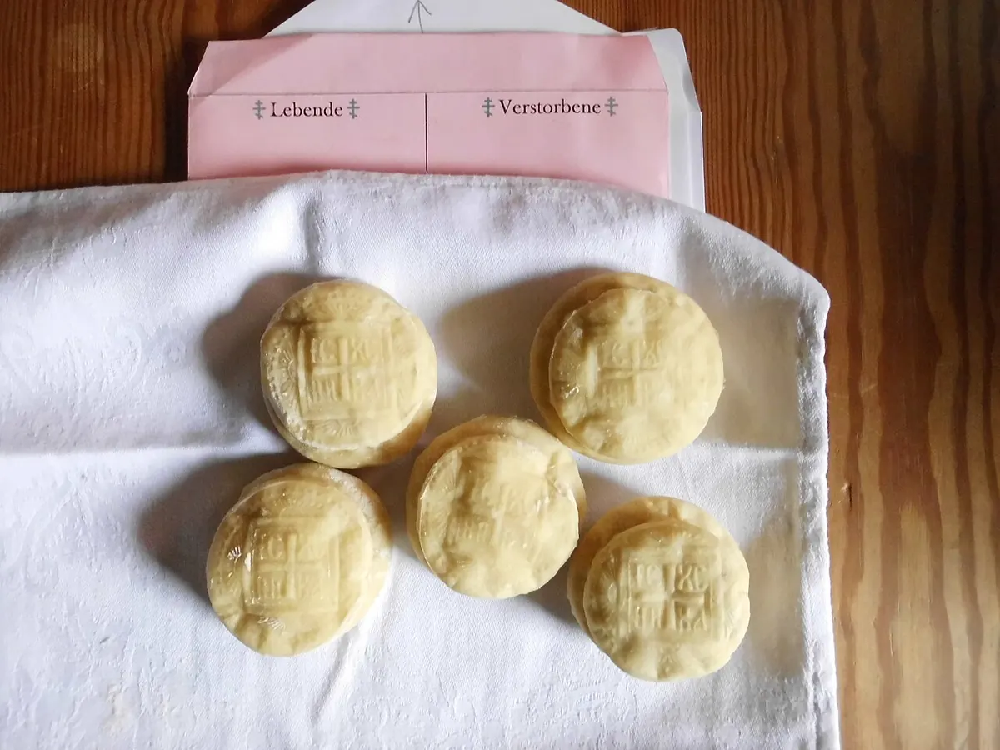

01 Что такое просфора?

Греческое слово просфора означает «приношение». Это небольшой круглый квасной хлеб из чистой пшеничной муки, воды, закваски и небольшого количества соли, часто с добавлением святой воды. Его выпекает с молитвой просфорница, получившая на это благословение.
Хлеб, который говорит
- Две части, изготовленные отдельно и соединённые вместе, означают два естества Христа — Божество и человечество, а также человека, состоящего из тела и души.
- Печать сверху — крест с надписью ІС ХС НИ КА: «Иисус Христос побеждает».
- Закваска знаменует животворящую силу Святого Духа, а мука из множества зёрен — человечество, собранное в одно тело.